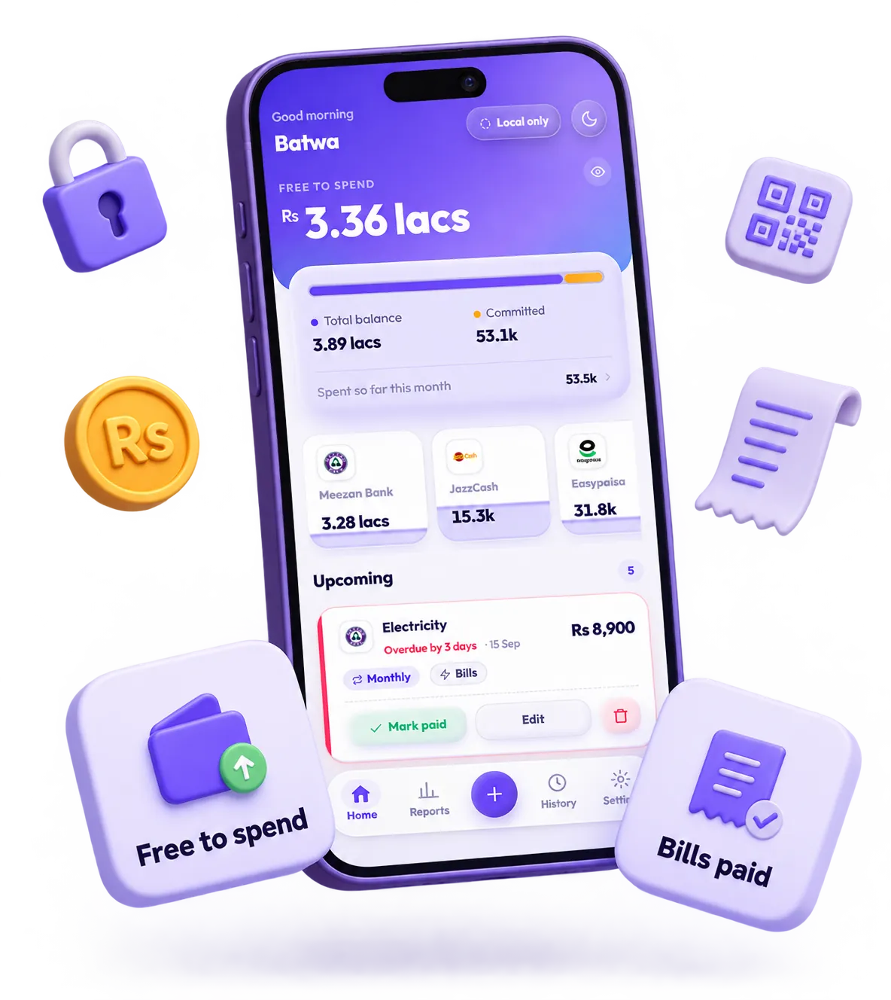
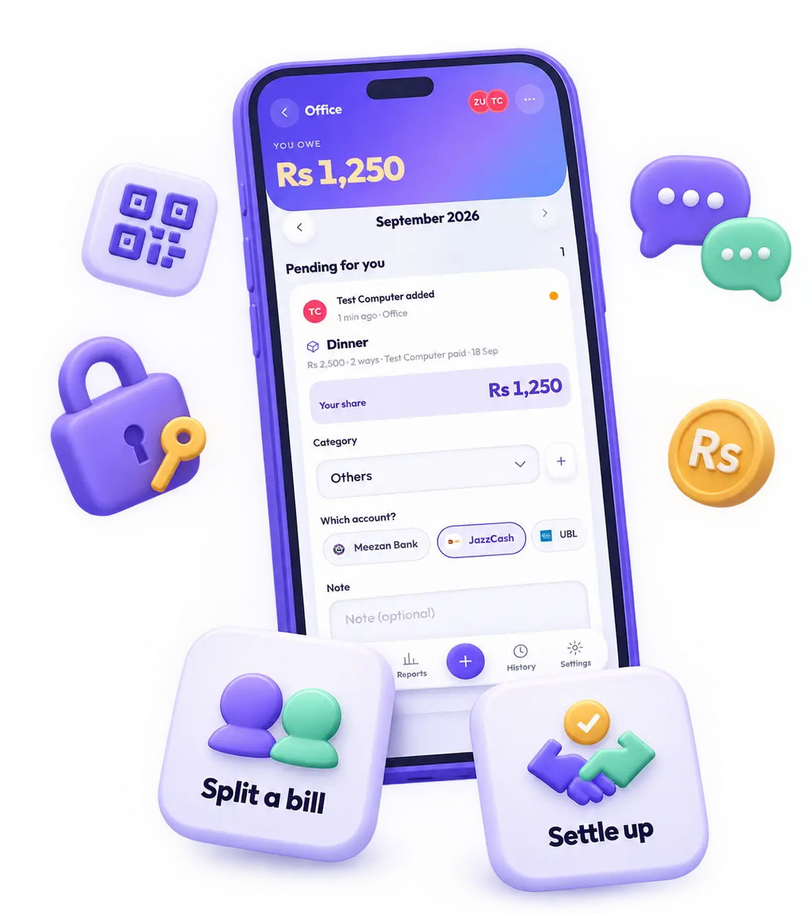
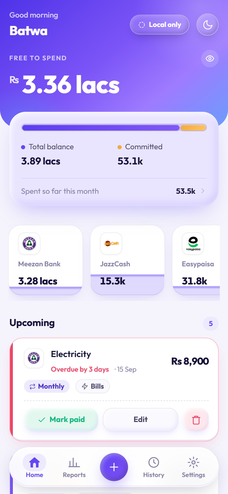
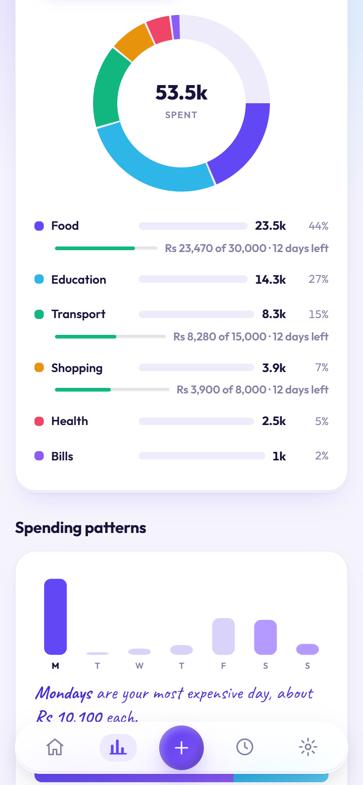
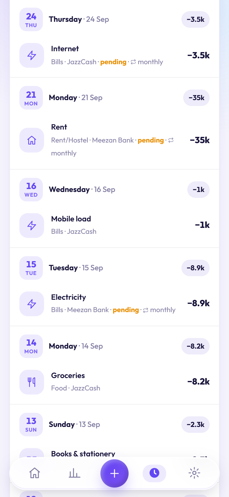
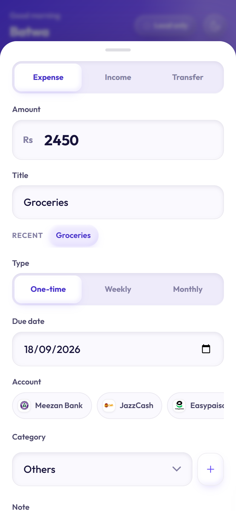

Free Open source Works offline
Batwa by ZUBYR Your money, tracked privately.
Batwa is a free budget app for Pakistan that runs on your phone and never sends your data anywhere. You set a PIN, add your JazzCash, Easypaisa, bank and cash accounts, and Batwa shows what is actually free to spend.
batwa means wallet in Urdu

A budget app that lives only on your phone
Batwa is a personal money tracker you install from the browser. Everything it knows is encrypted on your device before it is written down.
accounts to create
No sign-up, no email, no password. Open the app and start.
bytes sent to a server
No analytics, no crash reporting, no third-party requests at runtime.
of the code on GitHub
No build step either, so the code you read is the code that runs.
Made for money in Pakistan
Wallets, banks and cash sit side by side, and the app speaks rupees.
JazzCash, Easypaisa, banks, cash
Pick a logo, set a balance, and every account shows its own number on Home.
Share a bank SMS
On Android, share the message to Batwa and the form fills itself. Nothing else is read.
Rupees with quick math
Type 120+80 or 1,500/3 in the amount field and Batwa does the sum.

Split bills with the people you actually split with
- Create a space and invite the others by QR.
- Everyone approves their own share and picks their own account.
- Settle up when you meet, in one tap.
The relay only ever stores encrypted text. It cannot read names, amounts or who is in a space. How the relay works
Your money never leaves your phone
Nobody, including the person who wrote Batwa, can read what you put in it.
PIN is the key
Your four-digit PIN derives the encryption key. Nothing is stored that can rebuild it.
PBKDF2 150,000
Encrypted at rest
The ledger lives in your browser as ciphertext. The host that serves the app never sees it.
AES-256-GCM
Nothing phones home
No analytics, no crash reporting, no fonts or scripts fetched from anyone else.
0 third-party requests
What it looks like




Get started in a minute
-
Open batwa.zubyr.dev
No download, no store, no sign-up. It is a web page until you decide otherwise.
-
Add it to your home screen
Android offers an install prompt. On iPhone tap Share, then Add to Home Screen.
-
Set a PIN and add an account
The PIN becomes your encryption key. Add your first account and start logging.
no sign-up, promise
Questions people ask
Is Batwa free?
Yes. Batwa is free to use and there is nothing to buy inside it. There is no account, no subscription and no paid tier.
Where is my data stored?
Only in your own browser, on your own device. The ledger sits in IndexedDB as AES-256-GCM ciphertext. The static host that serves the app never receives a byte of it.
What happens if I forget my PIN?
The data is gone. Your PIN derives the encryption key and nothing is stored that can rebuild it. That is why Batwa keeps offering you an export backup.
Does it work without internet?
Yes. Batwa installs as a web app and runs fully offline after the first load. Cloud sync and shared spaces are the only optional parts that need a connection.
Does it work on iPhone?
Yes. Open batwa.zubyr.dev in Safari, tap Share, then Add to Home Screen. Fingerprint unlock and background bill reminders are Android-only for now.
Can Batwa read my bank SMS?
No. Batwa never reads your messages. On Android you can share a single bank SMS to Batwa, and only that one message is parsed to fill the form.
Is it open source?
Yes. The whole app is on GitHub, including the relay that shared spaces use. There is no build step, so the code you read is the code that runs.
Who made Batwa?
Batwa is built by Zubair bin Shaukat, a software engineer and developer from Lahore, Pakistan, who works as ZUBYR. His portfolio is at zubyr.dev and the code is on GitHub.